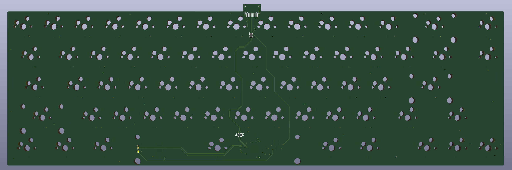
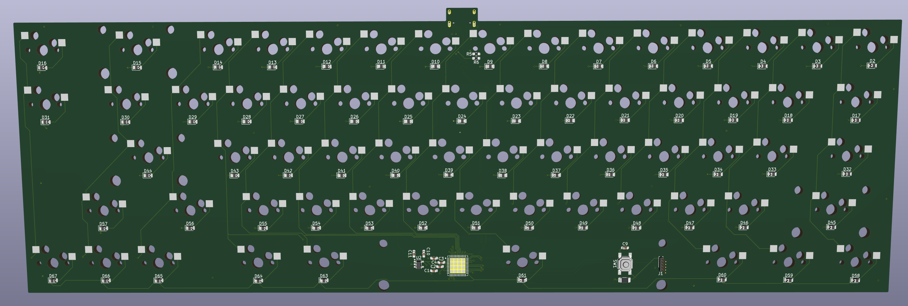
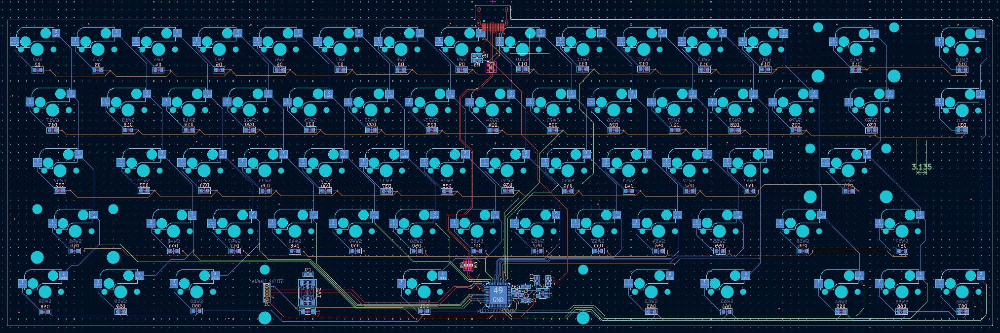
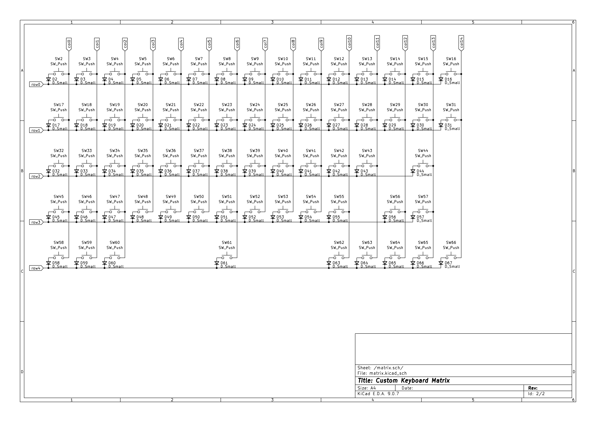
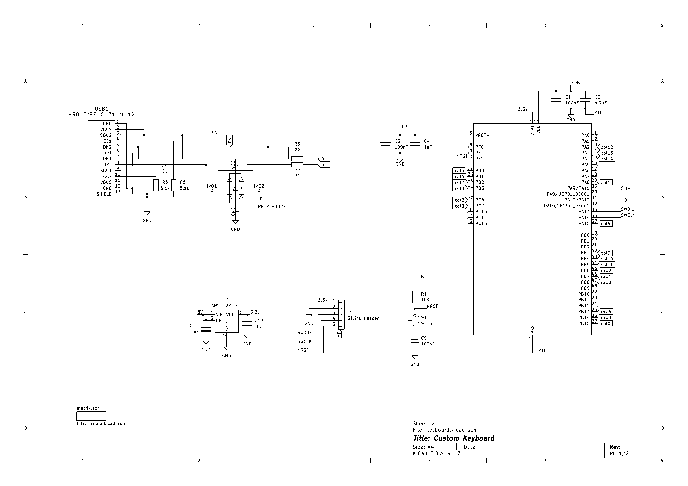

Project mission: design a keyboard where every layer is a deliberate choice, not a factory compromise. Build the KiCad and STM32 skills, and end up with exactly the board I want to use.
Why build it.
Off-the-shelf keyboards make tradeoffs I don't control: a layout that's close but not quite right, a PCB I can't modify, a case that fits the mold but not my desk. Building from scratch means I pick the layout, choose every feature on the PCB, and design the enclosure around the board rather than the other way around.
It's also a genuine learning project. Laying out a PCB in KiCad, placing an STM32, routing USB-C with ESD protection, and generating gerbers for fabrication covers the full PCB workflow in a way that's immediately verifiable: either the keyboard works or it doesn't. The 65% layout keeps the build compact while holding onto the arrow cluster, which is the one thing I'm not willing to drop.
PCB design.


Controller
The board is centered on an STM32G0B1CEUx, an ARM Cortex-M0+ with native USB 2.0 full-speed built in. Native USB matters here: the MCU enumerates directly as a USB HID device without a USB-to-serial bridge, keeping the hardware simple and giving QMK full control over the USB descriptor. I'm familiar with the STM32G-family from other projects, so reaching for the G0 here made sense — it has everything a keyboard needs without the cost or complexity of a larger part. QMK supports it via ChibiOS, which handles the low-level RTOS and USB stack.

USB-C and ESD protection
The USB connector is USB-C with ESD protection on the data lines via a PRTR5V0U2X TVS array. Keyboard connectors take a lot of plug cycles and get exposed to whatever static charge walks up to the desk, so protecting the USB differential pair is straightforward insurance. The TVS device clamps transients before they reach the MCU's USB pins.
Hot-swap sockets
Rather than soldering switches directly, the PCB uses hot-swap sockets. Switches snap in and pull out without heat, so I can swap between switch feels without reflowing the board. From a layout standpoint this means placing socket footprints precisely, keeping the underside of the board clear of traces in the socket area, and orienting each socket consistently so the seating force goes the right direction.
Diode matrix and N-key rollover
Keys in a keyboard matrix are arranged in rows and columns: scanning firmware pulses each row and checks which columns respond. Without per-key diodes, pressing three keys that form three corners of a rectangle in the grid creates a reverse current path through the fourth corner, registering a phantom keypress — a failure mode called ghosting. Adding a diode in series with each switch blocks that backpath. Any combination of keys can be held at once without interference, which QMK exposes as N-key rollover over USB HID.

Programming header
The PCB includes an STLink SWD header and a dedicated boot-mode button. During development, that means I can flash firmware and step through code with a debugger attached rather than relying purely on the USB DFU bootloader — a convenience that pays for itself the first time something doesn't behave as expected.

Case and plate.
The case is being designed in Onshape to fit the PCB footprint exactly. The target is CNC-machined aluminum: solid, resonant in the right ways, and built to last. Aluminum cases also give better acoustic control than printed plastic — the weight and rigidity damp the higher-frequency ping that cheaper cases emphasize.
Getting a case machined is a stretch goal after the PCB is verified. For the first functional build I'll use a printed case to confirm fit and feel, then move to aluminum once the layout and PCB are locked in. The Onshape model is parametric, so adjustments from the prototype carry forward without a full redraw.
Where it stands.
The PCB design is complete and ready to send to fabrication. Case design is actively in progress in Onshape. Switch and keycap selection is still open — both will be picked once the board is in hand and the layout is confirmed to feel right.
PCB
Design complete in KiCad. Ready for fabrication.
Case
In progress in Onshape. CNC aluminum is the target; printed prototype first.
Switches & Keycaps
TBD — selecting after the board is in hand and the layout is confirmed.